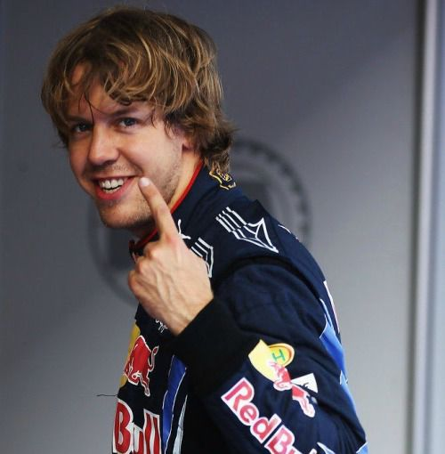
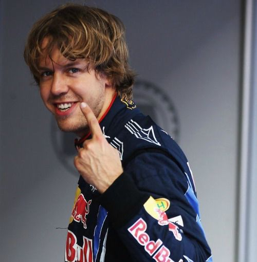

Memahami Salah Satu Perebutan Gelar Paling Kacau dan Kontroversial Dalam Sejarah F1
Banyak sejarah gelap dalam F1 termasuk perebutan gelar pada tahun 2021 antara Lewis Hamilton dan Max Verstappen di Abu Dhabi GP
Informasi SelengkapnyaSaya Alexandrio Maleteng, Mahasiswa Universitas Sam Ratulangi, Teknik Informatika
 

Banyak sejarah gelap dalam F1 termasuk perebutan gelar pada tahun 2021 antara Lewis Hamilton dan Max Verstappen di Abu Dhabi GP
Informasi SelengkapnyaMengingat salah satu pembalap F1 yang ikonik, melihat perjalanannya dari awal masuk F1, menjadi juara dunia sampai dia pensiun
Informasi SelengkapnyaF1 adalah puncak olahraga motor yang telah berdiri selama 74 tahun. Mari kita lihat 10 pembalap terbesar dalam sejarah F1 sejak tahun berdirinya di 1950
Informasi SelengkapnyaEmail: andrmltng@gmail.com